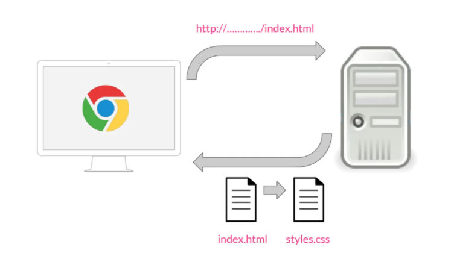

Concepto
Sus siglas corresponden a “Cascading Style Sheets”, que tiene el siguiente significado:
Cascading, que significa que los estilos que aplicamos a los elementos de una página web se propagan a los elementos que contiene, se propagan en cascada.
Style, porque mediante CSS lo que hacemos es aplicar estilos visuales a los distintos elementos de nuestra página web.
Sheets, que significa hojas, porque los estilos de una página web se añaden en ficheros aparte, en ficheros con la extensión .css de manera general.
CSS ha ido evolucionando desde hace 25 años a la versión actual, que es CSS3, pero su función es la misma, sirve para dar estilos visuales a las páginas web.
Funcionamiento
Vamos a ver en un pequeño esquema qué es lo que sucede desde que se solicita una página web hasta que se le aplica el estilo. El proceso es el siguiente:
Cuando desde un navegador, por ejemplo Chrome, solicitamos una página a través de una dirección, por ejemplo http://..../index.html, esta petición va a un servidor web, que nos devuelve la página que se ha solicitado.
Para aplicar estilos en las páginas HTML, se utiliza un fichero aparte, una hoja de estilos con la extensión .css, por lo que cuando estos dos documentos llegan al navegador, va a leer el documento HTML, le aplica los estilos CSS y lo muestra.
Si quieres profundizar mucho más en CSS3, puedes hacer el Curso de HTML5 y CSS3. En este curso aprenderás a crear paso a paso páginas Webs profesionales.
Siguiente